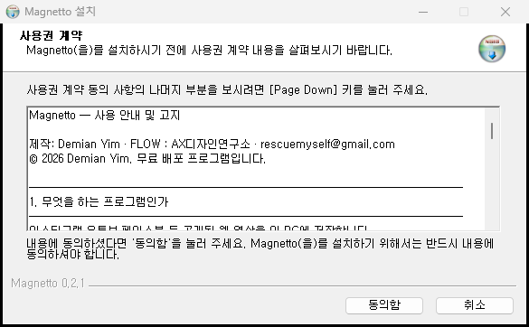
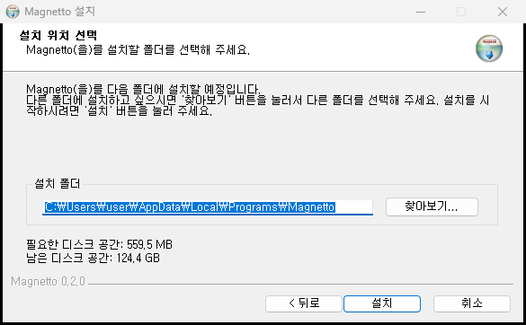
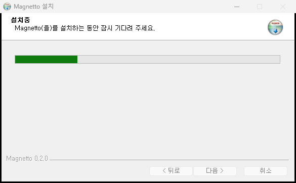
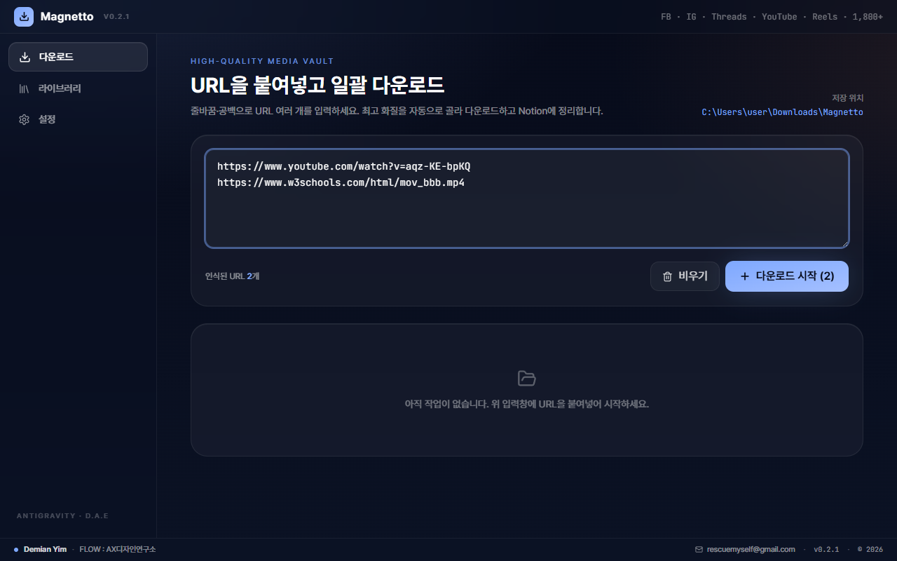
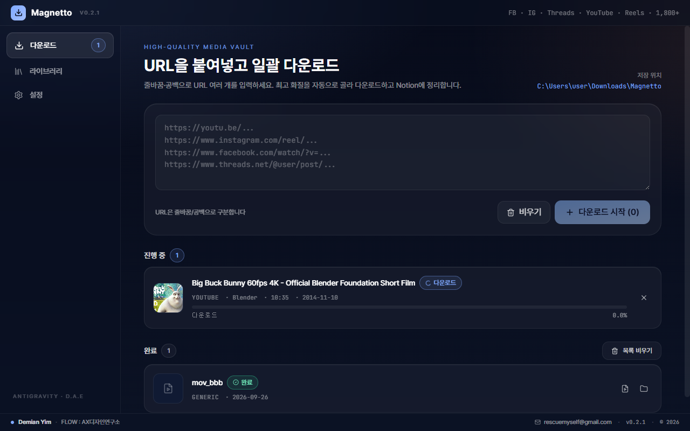
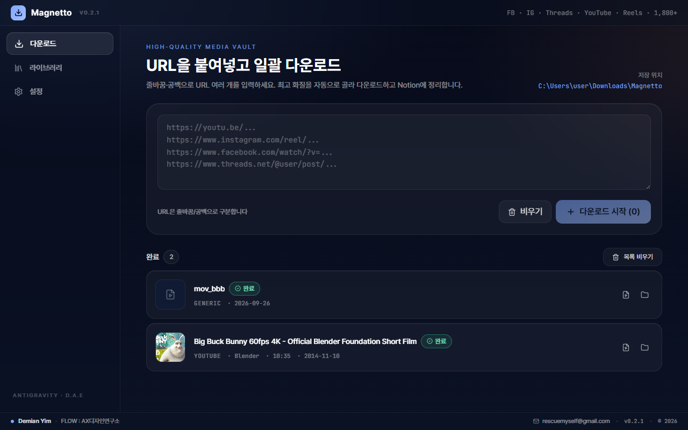
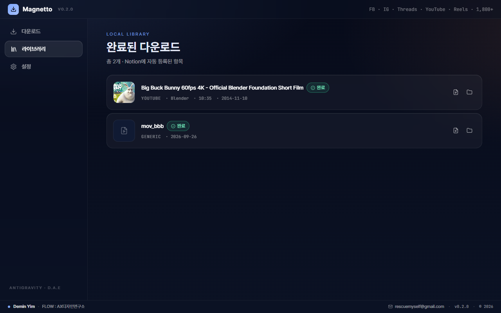
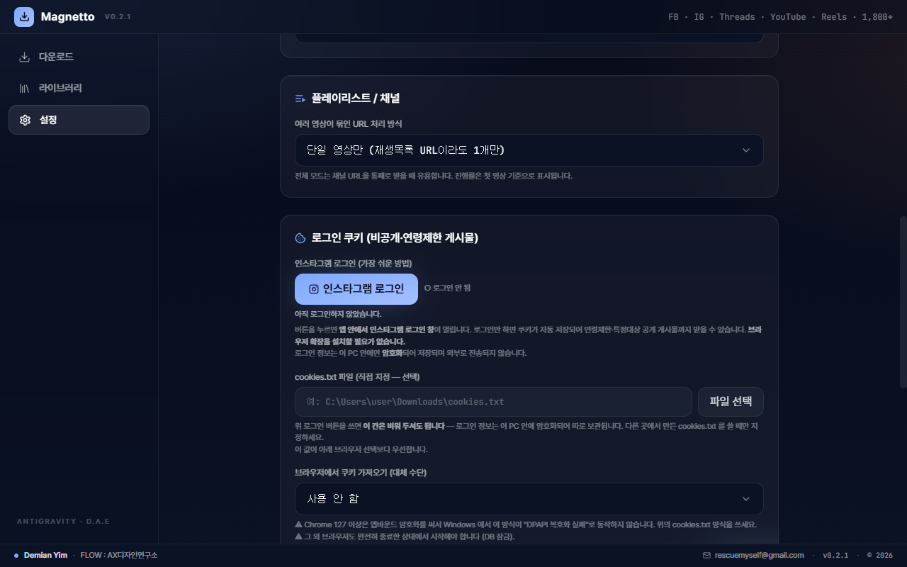
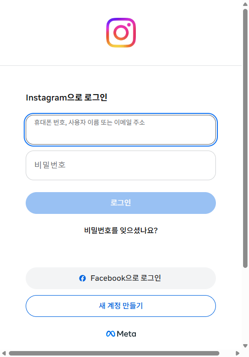
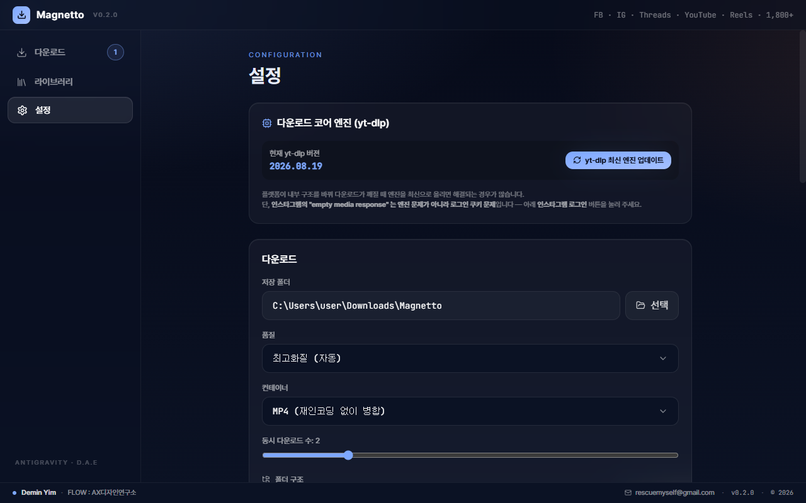

Windows
Windows에 설치하기
받은 파일을 더블클릭하고, 아래 화면들을 지나면 끝납니다.
- 파란 경고창이 뜨면 — "Windows의 PC 보호"라는 창이 뜹니다.
창 안의 추가 정보를 누르면 아래에 실행 버튼이 생깁니다. 그 버튼을 누르세요.
왜 경고가 뜨나요? 이 프로그램에는 해마다 비용을 내야 하는 "제작자 인증서"(코드서명)가 붙어 있지 않습니다. 바이러스라서가 아니라, 인증서가 없는 프로그램에 Windows가 자동으로 붙이는 안내입니다. 개인이 무료로 배포하는 프로그램에서 흔히 보입니다.
미덥지 않으시면 아래 받은 파일이 진짜인지 확인하기로 직접 검증하실 수 있습니다.
- 사용 안내 및 고지 화면을 읽고 동의함을 누릅니다.

- 설치 위치는 그대로 두고 설치를 누릅니다.

- 잠시 기다립니다. 파일이 큰 편이라 1~2분쯤 걸립니다. 끝나면 마침을 누르세요.

- 바탕화면의 Magnetto 아이콘으로 실행합니다.
지우고 싶을 때: Windows 설정 → 앱 → 설치된 앱 → Magnetto → 제거
Mac
Mac에 설치하기
처음 한 번만 "그래도 열기"를 눌러 주시면, 다음부터는 바로 열립니다.
- 받은
.dmg파일을 더블클릭해 엽니다. - 열린 창에서 Magnetto 아이콘을 Applications(응용 프로그램) 폴더로 끌어다 놓습니다.
- 응용 프로그램 폴더에서 Magnetto를 더블클릭합니다.
- "Apple은 'Magnetto'에 … 악성 코드가 없음을 확인할 수 없습니다" 같은 창이 뜨면 완료를 누릅니다.
- 🍎 메뉴 → 시스템 설정 → 왼쪽 개인정보 보호 및 보안 → 오른쪽을 아래로 내리면 "'Magnetto'이(가) 차단되었습니다" 옆에 그래도 열기 버튼이 있습니다. 누릅니다.
- Mac 암호를 입력하고, 다시 뜨는 창에서 그래도 열기를 누르면 실행됩니다.
그래도 열리지 않으면 (마지막 방법) — 응용 프로그램 → 유틸리티 → 터미널을 열고 아래 한 줄을 붙여 넣은 뒤 Enter를 누르세요.
xattr -dr com.apple.quarantine /Applications/Magnetto.app이 문서의 Mac 화면 사진은 아직 없습니다. 화면 문구는 macOS 버전마다 조금씩 다릅니다. 위 순서는 Apple 칩·Intel 칩 두 설치본을 자동 검증한 결과를 바탕으로 적었습니다.
지우고 싶을 때: 응용 프로그램 폴더의 Magnetto를 휴지통으로 옮기면 됩니다.
사용법
쓰는 법은 세 단계입니다
① 주소를 붙여 넣습니다
영상 주소(URL)를 입력칸에 붙여 넣습니다. 여러 개를 한 번에 받으려면 한 줄에 하나씩 넣으세요. 몇 개가 인식됐는지 버튼에 숫자로 표시됩니다.

② 다운로드 시작을 누릅니다
제목·채널·길이·미리보기 그림을 찾아온 뒤, 화질을 자동으로 가장 좋은 것으로 골라 받습니다. 진행률과 남은 시간이 실시간으로 보입니다.

③ 끝나면 폴더를 엽니다
완료 목록의 폴더 버튼을 누르면 저장된 폴더가 바로 열립니다.

지금까지 받은 것 모아 보기

인스타그램에서 "로그인이 필요합니다"라고 나올 때
인스타그램은 연령·지역 제한이 있거나 일부에게만 공개된 게시물을 로그인 없이는 내주지 않습니다.
- 설정 → 로그인 쿠키로 내려가 인스타그램 로그인 버튼을 누릅니다.

- 앱 안에서 인스타그램 로그인 창이 열립니다. 평소처럼 로그인하면 끝입니다.
브라우저 확장 프로그램을 따로 설치할 필요가 없습니다.

로그인 정보는 이 컴퓨터 안에만 암호화되어 저장됩니다. Windows·Mac이 제공하는 운영체제 수준 암호화를 써서 보관하며, 어디로도 전송되지 않습니다.
여러 사람이 함께 쓰는 컴퓨터라면, 다 쓰신 뒤 같은 화면에서 로그아웃을 눌러 주세요.
설정
바꿀 수 있는 것들
저장 폴더, 화질, 파일 형식, 동시에 받는 개수, 폴더 정리 방식을 설정 화면에서 바꿀 수 있습니다. 다운로드 엔진(yt-dlp)은 앱을 켤 때 자동으로 최신으로 맞춰지고, 필요하면 직접 눌러 갱신할 수도 있습니다.

주의
꼭 지켜 주세요
| ⚖️ 저작권 | 받은 영상의 저작권은 원래 게시자에게 있습니다. 개인 보관 · 학습 인용 · 내가 올린 영상 되찾기에만 쓰세요. 다시 올리거나 상업적으로 쓰면 안 됩니다. |
|---|---|
| 📵 인스타 계정 보호 | 짧은 시간에 너무 많이 받으면 인스타그램이 자동 수집으로 보고 로그인한 내 계정을 제한할 수 있습니다. 설정 → 동시 다운로드 수는 1~2개를 권합니다. |
| 🔒 보증 없음 | 사이트 정책이 바뀌면 일부 영상이 받아지지 않을 수 있습니다. 무료로 제공하는 프로그램이며 보증하지 않습니다. |
FAQ
자주 묻는 문제
| 증상 | 해결 |
|---|---|
| "다운로드 엔진을 찾지 못했습니다" | 백신이 엔진 파일을 격리했을 수 있습니다. 백신의 격리 목록에서 Magnetto 관련 파일을 복원하고 다시 설치해 주세요. |
| 인스타그램 "로그인이 필요합니다" | 위 인스타그램 로그인을 진행하세요. 이미 하셨다면 다시 로그인을 누르세요. |
| "요청 속도를 제한했습니다" | 설정에서 동시 다운로드 수를 1로 낮추고 몇 분 뒤 다시 시도하세요. |
| 예전에 되던 사이트가 갑자기 안 됨 | Magnetto를 껐다 켜면 다운로드 엔진이 자동으로 최신 버전으로 바뀝니다. |
선택
받은 파일이 진짜인지 확인하기
Releases 페이지의
SHA256SUMS.txt에 각 파일의 고유 번호(해시)가 있습니다.
아래 명령으로 나온 번호가 그 파일의 번호와 같으면, 중간에 바뀌지 않은 원본입니다.
Windows — PowerShell
Get-FileHash .\Magnetto-Setup-0.2.0-win-x64.exeMac — 터미널
shasum -a 256 ~/Downloads/Magnetto-0.2.0-mac-arm64.dmg